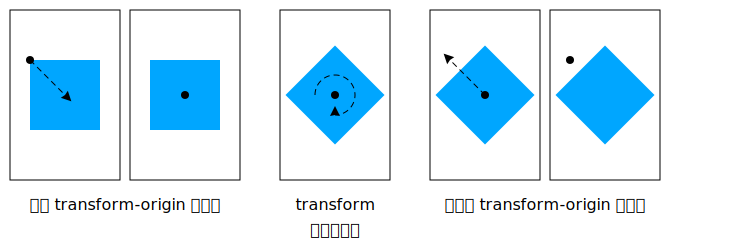
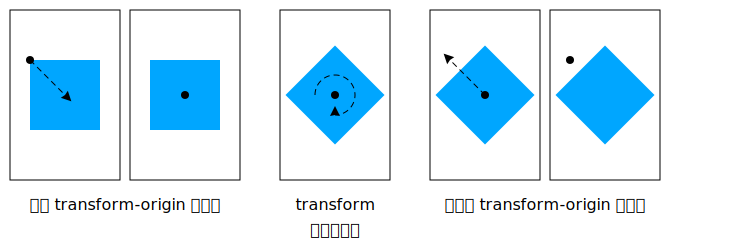

CSS Transform （変形, 変換（座標系変換））は、要素を二次元~空間の中で変形させられるようにするための，~CSSによる~style付けを規定する。
この仕様は、
CSS 2D transforms,
SVG transforms
仕様の収束である。
◎
CSS transforms allows elements styled with CSS to be transformed in two-dimensional space. This specification is the convergence of the CSS 2D transforms and SVG transforms specifications.
~CSSの`視覚~整形~model$は、各 要素が位置される座標系について述べている。
この座標空間における位置と~sizeは、原点から右方／下方に向かって増大する画素~数による正の値で表されるものと捉え得る。
◎
The CSS visual formatting model describes a coordinate system within each element is positioned. Positions and sizes in this coordinate space can be thought of as being expressed in pixels, starting in the origin of point with positive values proceeding to the right and down.
この座標空間は， `transform$p ~propにより改変できる。
この変形により，要素を並進させ, 回転させ, 拡縮させられる。
◎
This coordinate space can be modified with the transform property. Using transform, elements can be translated, rotated and scaled.
2. ~module間の相互作用
この~moduleは、適用-対象の要素の視覚的~描画に影響する，一連の~CSS~propを定義する —
これらの効果は、 `CSS21$r の`視覚~整形~model$に則って，要素の~sizeと位置が~~決定された後に適用される。
これらの~propの一部の値に対しては、新たな`包含塊$が設置されたり, `積層~文脈$が確立される。
◎
This module defines a set of CSS properties that affect the visual rendering of elements to which those properties are applied; these effects are applied after elements have been sized and positioned according to the Visual formatting model from [CSS21]. Some values of these properties result in the creation of a containing block, and/or the creation of a stacking context.
変形は、 `CSS3BG$r にて指定される `background-attachment$p ~propに値 `fixed^v を伴う要素~上の背景~描画にも影響する。
◎
Transforms affect the rendering of backgrounds on elements with a value of fixed for the background-attachment property, which is specified in [CSS3BG].
変形は、 `CSSOM-VIEW$r による `Element^I ~interface拡張：
`getClientRects()$m,
`getBoundingClientRect()$m
が返す~client矩形にも影響する。
◎
Transforms affect the client rectangles returned by the Element Interface Extensions getClientRects() and getBoundingClientRect(), which are specified in [CSSOM-VIEW].
◎
an element whose layout is governed by the CSS box model which is either a block-level or atomic inline-level element, or whose display property computes to table-row, table-row-group, table-header-group, table-footer-group, table-cell, or table-caption [CSS21]
~SVG名前空間に属する, かつ
~CSS~box~modelにより統制されない, かつ［
`transform$a,
`patternTransform$a,
`gradientTransform$a
］のいずれかの属性を持つ要素。
`SVG11$r
◎
an element in the SVG namespace and not governed by the CSS box model which has the attributes transform, patternTransform or gradientTransform [SVG11].
`変形要素@◎transformed element
`transform$p ~propの算出値に `none^v 以外の値を伴う要素。
◎
An element with a computed value other than none for the transform property.
◎
In general, a coordinate system defines locations and distances on the current canvas. The current local coordinate system (also user coordinate system) is the coordinate system that is currently active and which is used to define how coordinates and lengths are located and computed, respectively, on the current canvas. The current user coordinate system has its origin at the top-left of a reference box specified by the transform-box property. Percentage values are relative to the dimension of this reference box. One unit equals one CSS pixel.
`変換行列@◎transformation matrix
ある座標系から別の座標系への数学的な写像を定義する行列。
`transform$p, `transform-origin$p ~propの値から，
後述の様に
算出される。
◎
A matrix that defines the mathematical mapping from one coordinate system into another. It is computed from the values of the transform and transform-origin properties as described below.
`現在の変換行列@（ CTM ）◎CTM — current transformation matrix）
当の要素の局所座標系から表示域 座標系への写像を定義する行列。
◎
A matrix that defines the mapping from the local coordinate system into the viewport coordinate system.
`~2D行列@◎2D matrix
6 項からなる~3x2の変換行列であるか、または
16 項からなる~4x4の変換行列であって，項［
`31^M, `32^M, `13^M, `23^M, `43^M, `14^M, `24^M, `34^M
］が 0 に等しく, 項［
`33^M, `44^M
］が 1 に等しいもの。
◎
A 3x2 transformation matrix with 6 items or a 4x4 matrix with 16 items, where the items m31, m32, m13, m23, m43, m14, m24, m34 are equal to 0 and m33, m44 are equal to 1.
◎
A transform function that is equivalent to a identity 4x4 matrix (see Mathematical Description of Transform Functions). Examples for identity transform functions are translate(0), translateX(0), translateY(0), scale(1), scaleX(1), scaleY(1), rotate(0), skew(0, 0), skewX(0), skewY(0) and matrix(1, 0, 0, 1, 0, 0).
5. 変形の描画~model
この節は規定である。
◎
This section is normative.
`transform$p ~propに対する `none^v 以外の値の指定は、適用-対象の要素において，新たな`局所座標系$を確立させる。
この~propにより指定される`変換行列$は、要素の描画~先の座標系から，その局所座標系への写像を与える【†】。
変換は累積的である。
すなわち、要素はその親の座標系の中で局所座標系を確立する。
利用者~側からは、要素は，実質的に，それに適用される局所~変形のみならず，その先祖のすべての `transform$p ~propが累積されたように見える。
要素に対する`現在の変換行列$が、これらの変形の累積により定義される。
◎
Specifying a value other than none for the transform property establishes a new local coordinate system at the element that it is applied to. The mapping from where the element would have rendered into that local coordinate system is given by the element’s transformation matrix. Transformations are cumulative. That is, elements establish their local coordinate system within the coordinate system of their parent. From the perspective of the user, an element effectively accumulates all the transform properties of its ancestors as well as any local transform applied to it. The accumulation of these transforms defines a current transformation matrix for the element.
この座標空間は、 X 軸は右方に, Y 軸は下方に増大する， 2 軸による座標系である。
◎
The coordinate space is a coordinate system with two axes: the X axis increases horizontally to the right; the Y axis increases vertically downwards.
`変換行列$は、
`transform$p, `transform-origin$p
~propから，次の様にして算出される：
◎
The transformation matrix is computed from the transform and transform-origin properties as follows:
単位行列から開始する。
◎
Start with the identity matrix.
`transform-origin$p の算出値による X, Y で並進させる — (A)
◎
Translate by the computed X and Y of transform-origin
左から右の順に，［
`transform$p ~propで与えられる変形関数~list
］の各~変形関数で積算する。
◎
Multiply by each of the transform functions in transform property from left to right
【
すなわち、対応する変換行列により，同じ順序で積算する
】
(A) と同じ移動量だけ逆方向に，並進させる。
◎
Translate by the negated computed X and Y values of transform-origin
【
すなわち、(A) の逆行列で積算する
】
変形は、`変形可能$な要素に適用される。
◎
Transforms apply to transformable elements.
注記：
変換は、~canvas上の描画には影響するが、~CSS~layout自体には，overflowを除いて影響しない。
変形は、 `CSSOM-VIEW$r にて指定される［
`Element^I ~interface拡張により公開される
`getClientRects()$m,
`getBoundingClientRect()$m
］による~client矩形の算出にも織り込まれる。
◎
Note: Transformations do affect the visual rendering, but have no affect on the CSS layout other than affecting overflow. Transforms are also taken into account when computing client rectangles exposed via the Element Interface Extensions, namely getClientRects() and getBoundingClientRect(), which are specified in [CSSOM-VIEW].
div {
transform: translate(100px, 100px);
}
この変形は、要素を X, Y 両方向に 100 画素~移動させる（図左が変形~前, 図右が変形~後）。
◎
This transform moves the element by 100 pixels in both the X and Y directions.
`transform-origin$p ~propにより，原点を X, Y 両方向に 50 画素ずつずらす。
`transform^p は，原点を中心に要素を時計回りに 45° 回転させる。
すべての変形関数が適用された後、原点は， X, Y 両方向に -50 画素だけ並進されて引き戻される。
◎
The transform-origin property moves the point of origin by 50 pixels in both the X and Y directions. The transform rotates the element clockwise by 45° about the point of origin. After all transform functions were applied, the translation of the origin gets translated back by -50 pixels in both the X and Y directions.
この変形は、要素を
X, Y 両方向に 80 画素~移動させ,
150% に拡大してから,
Z 軸を中心に時計回りに 45° 回転させる。
拡縮と回転は、要素の既定の変換原点（ `transform-origin$p ）が `50% 50%^v なので，要素の中心を軸に作用することに注意。
◎
This transform moves the element by 80 pixels in both the X and Y directions, then scales the element by 150%, then rotates it 45° clockwise about the Z axis. Note that the scale and rotation operate about the center of the element, since the element has the default transform-origin of 50% 50%.
~layoutが~CSS~box~modelにより統制される要素においては、変形~propは，`変形要素$の周囲の内容の~flowには影響しない。
しかしながら、~overflow区画には，`変形要素$も織り込まれる。
この挙動は、要素が相対的な位置決め（
`position$p: `relative^v
）を通してずらされるときに類似する。
したがって， `overflow$p ~propの値が
`scroll^v ／ `auto^v
の下では、可視~区画の外側に変形された内容も見れるようにするための~scrollbarが，必要に応じて現れることになる。
◎
For elements whose layout is governed by the CSS box model, the transform property does not affect the flow of the content surrounding the transformed element. However, the extent of the overflow area takes into account transformed elements. This behavior is similar to what happens when elements are offset via relative positioning. Therefore, if the value of the overflow property is scroll or auto, scrollbars will appear as needed to see content that is transformed outside the visible area.
要素に`積層~文脈$を作成させることになる。
実装は、［
この作成した層を塗る際の，親の`積層~文脈$の中での積層~順序
］を，［
要素が，`z-index^p が `0^v にされた有位置の要素であった
］とするときのそれと同じにし~MUST。
変形を伴う有位置の要素に対しては、 `z-index^p ~propは，
`CSS21$r に述べられるように適用される
— ただし、新たな積層~文脈を常に作成するので， `auto^v は `0^v に扱うとする。
◎
For elements whose layout is governed by the CSS box model, any value other than none for the transform results in the creation of a stacking context. Implementations must paint the layer it creates, within its parent stacking context, at the same stacking order that would be used if it were a positioned element with ‘z-index: 0’. If an element with a transform is positioned, the ‘z-index’ property applies as described in [CSS21], except that ‘auto’ is treated as ‘0’ since a new stacking context is always created
要素は`包含塊$にもなり、~objは，固定位置にされた子孫に対する包含塊としてふるまうようになる。
◎
For elements whose layout is governed by the CSS box model, any value other than none for the transform also causes the element to become a containing block, and the object acts as a containing block for fixed positioned descendants.
これが固定位置（
`position$p: `fixed^v
）に効果を及ぼすことは必要とされるのか？
そうであれば、固定位置にされた~objがこれをすべき~~理由について詳細を述べる必要がある
— その実装はずっと困難になるので。
`16328$bug を見よ。
◎
Is this effect on position: fixed necessary? If so, need to go into more detail here about why fixed positioned objects should do this, i.e., that it’s much harder to implement otherwise. See Bug 16328.
根~要素~上に`固定された背景$は、その要素に指定されたどの変形からも影響される。
変形から影響される（すなわち，自身または先祖の要素に変形が適用されている）他のすべての要素に対しては、 `background-attachment$p ~propに対する値 `fixed^v は，値 `scroll^v を持つかのように扱われる。
`background-attachment$p の算出値は影響されない。
◎
Fixed backgrounds on the root element are affected by any transform specified for that element. For all other elements that are effected by a transform (i.e. have a transform applied to them, or to any of their ancestor elements), a value of fixed for the background-attachment property is treated as if it had a value of scroll. The computed value of background-attachment is not affected.
注記：
根~要素が変形された場合、変換は，根~要素に指定されている背景も含めて，~canvas全体に適用される。
`根~要素に対する背景~塗り区画$は ~canvas全体であり無限なので、変換により，元々は~screen外に在った背景の一部分が現れるようになり得る。
例えば，根~要素の背景が~dotの繰り返し模様であって，
根~要素~上に変換
`scale(0.5)^v
が指定されていたなら、~dotの大きさは半分になるが，その個数は 2 × 2 倍になり，依然として表示域の全面を覆うことになる。
◎
Note: If the root element is transformed, the transformation applies to the entire canvas, including any background specified for the root element. Since the background painting area for the root element is the entire canvas, which is infinite, the transformation might cause parts of the background that were originally off-screen to appear. For example, if the root element’s background were repeating dots, and a transformation of scale(0.5) were specified on the root element, the dots would shrink to half their size, but there will be twice as many, so they still cover the whole viewport.
変換は、 `transform$p ~propを通して要素が描画される座標系に適用される。
この~propは`変形関数$の~listを包含する。
座標系に対する最終的な変換の結果は、`変形関数の数学的~記述$にて定義されるように，~listの中の各~関数を対応する行列に換算した上で，それらの行列で積算することにより得られる。
◎
A transformation is applied to the coordinate system an element renders in through the transform property. This property contains a list of transform functions. The final transformation value for a coordinate system is obtained by converting each function in the list to its corresponding matrix like defined in Mathematical Description of Transform Functions, then multiplying the matrices.
`●名^ `transform@p
`●値^
`none^v | `transform-list$t
`●初^ `none^v
`●適^ `変形可能$な要素
`●継^ されない
`●百^
`基準~box$の~sizeに相対的
◎
refer to the size of reference box
`●媒^ 視覚的
`●算^
指定値。ただし，相対長は絶対~長さに換算される。
◎
As specified, but with relative lengths converted into absolute lengths.
`●順^ 文法に従う
`●ア^ 変形として補間される
`●表終^
`transform^p に対する `none^v 以外のどの算出値も，
変形の描画~model
に述べたように `包含塊$と`積層~文脈$に影響する。
◎
Any computed value other than none for the transform affects containing block and stacking context, as described in §5 The Transform Rendering Model.
◎
To serialize the <transform-function>s, serialize as per their individual grammars, in the order the grammars are written in, avoiding <calc()> expressions where possible, avoiding <calc()> transformations, omitting components when possible without changing the meaning, joining space-separated tokens with a single space, and following each serialized comma with a single space.
~4x4行列も以下に保っておくか？
◎
keep 4x4 matrix here and below?
A <transform-list> for the computed value is serialized to one matrix() function by the following algorithm:
keep 4x4 matrix here and below?
• Let transform be a 4x4 matrix initialized to the identity matrix. The elements m11, m22, m33 and m44 of transform must be set to 1 all other elements of transform must be set to 0.
• Post-multiply all <transform-function>s in <transform-list> to transform.
• Chose between matrix() or <matrix3d()> serialization:
•• If transform is a 2D matrix
••• Serialize transform to a matrix() function.
•• Otherwise
••• Serialize transform to a <matrix3d()> function.
~CSS~layout~boxが結び付けられていない~SVG要素に対する初期~時の`使用値$は `0 0^v である。
◎
The initial used value for SVG elements without associated CSS layout box is 0 0.
`transform$p, `transform-origin$p
~propの値は、上述に従って`変換行列$を算出するために利用される。
◎
The values of the transform and transform-origin properties are used to compute the transformation matrix, as described above.
指定された（成分）値が 1 個だけの場合、 2 個目の値は `center$vo と見做される。
指定された値が 2 個~以下の場合、 3 個目の値は `0px^v と見做される。
◎
If only one value is specified, the second value is assumed to be center. If one or two values are specified, the third value is assumed to be 0px.
この補完により得られた 3 値のうち，最初の 2 個の値のいずれにも
`center$vo 以外の~keywordが利用されていない場合、
1 個目の値は 横位置（または~offset）を表現し，
2 個目の値は 縦位置（または~offset）を表現する。
3 個目の値は常に Z 位置（または~offset）を表現し， `length$t 型で~MUST。
◎
If two or more values are defined and either no value is a keyword, or the only used keyword is center, then the first value represents the horizontal position (or offset) and the second represents the vertical position (or offset). A third value always represents the Z position (or offset) and must be of type <length>.
`percentage$t
百分率~値は、`基準~box$の左上~隅からの［
横／縦
］~offsetを表現し，`基準~box$の［
横幅／縦幅
］に相対的になる。
◎
A percentage for the horizontal offset is relative to the width of the reference box. A percentage for the vertical offset is relative to the height of the reference box. The value for the horizontal and vertical offset represent an offset from the top left corner of the reference box.
`length$t
長さ値は、固定長による`基準~box$の左上~隅からの［
横／縦 【 および Z 方向の】
］~offsetを表現する。
◎
A length value gives a fixed length as the offset. The value for the horizontal and vertical offset represent an offset from the top left corner of the reference box.
`top@vo
縦位置に対する `0%^v に算出される。
◎
Computes to 0% for the vertical position.
`right@vo
横位置に対する `100%^v に算出される。
◎
Computes to 100% for the horizontal position.
`bottom@vo
縦位置に対する `100%^v に算出される。
◎
Computes to 100% for the vertical position.
`left@vo
横位置に対する `0%^v に算出される。
◎
Computes to 0% for the horizontal position.
`center@vo
横位置が指定されていない場合、横位置に対する 50% （したがって［
50% `<縦位置の指定>^V …
］†）に算出される。
他の場合、縦位置に対する 50% （したがって［
`<横位置の指定>^V 50% …
］†）に算出される。
【 † 原文の記述は変だったので修正】
◎
Computes to 50% (left 50%) for the horizontal position if the horizontal position is not otherwise specified, or 50% (top 50%) for the vertical position if it is.
`transform-origin$p の`解決値$は、
`height^p の様に特別
とする。
`CSSOM$r
◎
The transform-origin property is a resolved value special case property like height. [CSSOM]
`transform$p, `transform-origin$p
~propにより定義される変換の位置と寸法は、次のいずれかとして指定される
`基準~box@
に相対的になる：
◎
All transformations defined by the transform and transform-origin property are relative to the position and dimensions of the reference box of the element. The reference box is specified by one of the following:
`border-box@vb
`~border~box$を基準~boxに利用する。
~tableの基準~boxは、その~table~boxではなく，その`~table包装~box$の~border~boxになる。
◎
Uses the border box as reference box. The reference box of a table is the border box of its table wrapper box, not its table box.
`fill-box@vb
`~obj限界~box$を基準~boxに利用する。
◎
Uses the object bounding box as reference box.
`view-box@vb
最も近い `~SVG表示域$（ viewport ）を基準~boxに利用する。
◎
Uses the nearest SVG viewport as reference box.
`~SVG表示域$を作成している【確立している】要素に
`viewBox$a 属性が指定されている場合：
◎
If a viewBox attribute is specified for the SVG viewport creating element:
基準~boxは
`viewBox$a 属性により確立される座標系の原点に位置される。
◎
The reference box is positioned at the origin of the coordinate system established by the viewBox attribute.
基準~boxの寸法は
`viewBox$a 属性の width, height 成分~値に設定される。
◎
The dimension of the reference box is set to the width and height values of the viewBox attribute.
基準~boxは、
`transform-origin$p ~propにより指定される原点に対し，追加の~offsetを加える
◎
A reference box adds an additional offset to the origin specified by the transform-origin property.
~CSS~layout~boxが結び付けられていない~SVG要素に対しては、
`border-box$vb に対する`使用値$は `view-box$vb になる。
◎
For SVG elements without an associated CSS layout box, the used value for border-box is view-box.
~CSS~layout~boxが結び付けられている要素に対しては、
`fill-box$vb ／ `view-box$vb に対する`使用値$は `border-box$vb になる。
◎
For elements with an associated CSS layout box, the used value for fill-box and view-box is border-box.
9. ~SVG `transform^a 属性
SVG 1.1 仕様は、［
`transform$a,
`gradientTransform$a,
`patternTransform$a
］属性を，`呈示属性$ `SVG11$r
として指定していない。
~SVGと HTML の統合を向上させるため、この仕様は，これらの~SVG属性を呈示属性として， `transform$p ~propを［
~SVG名前空間における`変形可能$な要素
］にも適用-可能にする。
◎
The SVG 1.1 specification did not specify the attributes "transform", gradientTransform or patternTransform as presentation attributes [SVG11]. In order to improve the integration of SVG and HTML, this specification makes these SVG attributes presentation attributes and makes the transform property one that applies to transformable elements in the SVG namespace.
この仕様は、新たな呈示属性として
`transform-origin$p も導入する。
新たに導入された呈示属性の値は
~SVG~data型
`SVG11$r
の構文~規則に従って構文解析される。
◎
This specification will also introduce the new presentation attribute transform-origin. Values on this presentation attribute get parsed following the syntax rules on SVG Data Types [SVG11].
9.1. ~SVG `transform^a 属性の詳細度
先に挙げた~SVG属性は呈示属性とされたので、それらの~CSS~cascadeへの関与†は，~SVG仕様の`呈示属性$の詳細度により決定される。
◎
Since the previously named SVG attributes become presentation attributes, their participation in the CSS cascade is determined by the specificity of presentation attributes in the SVG specification.
`transform$p ~style~propと
`transform$a 呈示属性の組合せを示す例：
◎
This example shows the combination of the transform style property and the transform presentation attribute.
~CSS~cascadeに関与することから、 `transform$p ~style~propは， `transform$a 呈示属性を上書きする。
従って，容器は横と縦いずれの方向にも `200px^v ではなく `100px^v 並進される。
◎
Because of the participation to the CSS cascade, the transform style property overrides the transform presentation attribute. Therefore the container gets translated by 100px in both the horizontal and the vertical directions, instead of 200px.
9.2. ~SVG `transform^a 属性の構文
後方互換性を保つため、 `transform$a 呈示属性の構文は，上の例に示された様に
`transform$p ~style~propの構文と異なる。
しかしながら、
`transform$p ~style~propに利用される構文は， `transform$a 呈示属性の値にも利用できる。
作者には、
値単位Module `CSS3VAL$r
の規則に従うことを勧める。
従って、作者は，例えば
`transform^a="`translate (200 200)^v"
の代わりに
`transform^a="`translate(200px, 200px)^v"
と記すべきである。
［
開き丸括弧（ `(^c ）の前の~space,
引数の合間の~commaの省略,
値における明示的な単位~表記の省略
］が妥当になるのは、属性においてのみなので。
◎
To provide backwards compatibility, the syntax of the transform presentation attribute differs from the syntax of the transform style property as shown in the example above. However, the syntax used for the transform style property can be used for a transform presentation attribute value. Authors are advised to follow the rules of CSS Values and Units Module [CSS3VAL]. Therefore an author should write ''transform="translate(200px, 200px)" instead of transform="translate (200 200)" because the second example with the spaces before the ('', the missing comma between the arguments and the values without the explicit unit notation would be valid for the attribute only.
9.2.1. 変形~list
`transform$a 属性に対する値は， 0 個~以上の［
`関数記法$を利用した変形関数
］からなる，変形~listである。
変形~listが複数個の変形関数からなる場合、これらの関数は［
0 個~以上の空白,
0 〜 1 個の~comma（ `,^v ）,
0 個~以上の空白
］の並びで互いに区切られ
【すなわち，空~文字列でも区切りになる】
、~listの先頭や末尾に 0 個~以上の空白があってもよい。
◎
The value for the transform attribute consists of a transform list with zero or more transform functions using functional notation. If the transform list consists of more than one transform function, these functions are separated by optional whitespace, an optional comma (,) and optional whitespace. The transform list can have optional whitespace characters before and after the list.
9.2.2. 関数記法
関数記法の構文は［
関数の名前 ,
左~丸括弧 ,
0 個以上の空白,
関数の引数の並び,
0 個以上の空白,
右~丸括弧
］の並びである。
関数が複数個の引数をとる場合、それらの引数は［
前後に 0 個以上の空白を伴い得る~comma（ `,^c ）
］または［
1 個~以上の空白
］により，互いに区切られる。
◎
The syntax starts with the name of the function followed by a left parenthesis followed by optional whitespace followed by the argument(s) to the notation followed by optional whitespace followed by a right parenthesis. If a function takes more than one argument, the arguments are either separated by a comma (,) with optional whitespace characters before and after the comma, or by one or more whitespace characters.
注記：
SVG 1.1 と異なり，この仕様では、関数の名前と左~丸括弧の間には空白は 許容されない。
◎
Note: Unlike SVG 1.1, this specification does not allow optional whitespace between the name of the function and the left parenthesis.
9.2.3. ~SVG~data型
新たに導入された呈示属性~上のすべての引数は，値単位Module `CSS3VAL$r による~data型からなる。
値単位Moduleの~data型の定義は、以下の様に増補される：
◎
Arguments on all new introduced presentation attributes consist of data types in the sense of CSS Values and Units Module [CSS3VAL]. The definitions of data types in CSS Values and Units Module are enhanced as follows:
9.2.3.1. 長さ： `length^t 型
`length$t は，単位~識別子を伴わない実数 — `number$t にもなり得る。
この場合の`実数$は、 “`利用単位$” による値として解釈される。
`初期~座標系$の下での利用単位は、親の環境の画素~単位と等価な概念0になる。
◎
A <length> can be a <number> without an unit identifier. In this case the number gets interpreted as "user unit". A user unit in the the initial coordinate system is equivalent to the parent environment’s notion of a pixel unit.
9.2.3.2. 角度： `angle^t 型
角度は，単位~識別子を伴わない `number$t にもなり得る。
この場合の`実数$は、度数（ degree ）による値として解釈される。
◎
An angle can be a <number> without an unit identifier. In this case the number gets interpreted as a value in degrees.
9.2.3.3. 実数： `number^t 型
~SVGは科学的~記数法による実数を~supportする。
従って実数は、~SVG属性に対する~SVGの基本~data型
number
による構文に従って構文解析される。
◎
SVG supports scientific notations for numbers. Therefore a number gets parsed like described in SVG Basic data types for SVG attributes.
この仕様は、~SVGにて指定される
`gradientTransform$a,
`patternTransform$a
属性を`呈示属性$とする。
両~属性とも，~SVG `transform$a 属性の`構文$と同じ構文を利用する。
この仕様は，対応する~CSS~style~propは導入しない。
両~属性とも `transform$p ~propのための呈示属性である。
◎
SVG specifies the attributes gradientTransform and patternTransform. This specification makes both attributes presentation attributes. Both attributes use the same syntax as the SVG transform attribute. This specification does not introduce corresponding CSS style properties. Both, the gradientTransform and the patternTransform attribute, are presentation attributes for the transform property.
9.4. ~SVG変形関数
既存の~SVG内容との後方互換性のため、この仕様は，
`transform$a 属性 `SVG11$r にて定義されるすべての変形関数を~supportする。
したがって~2D変形関数
rotate(`angle^t)
は，次の様に拡張される：
◎
For backwards compatibility with existing SVG content, this specification supports all transform functions defined by The ‘transform’ attribute in [SVG11]. Therefore the two-dimensional transform function rotate(<angle>) is extended as follows:
`transform-origin$p ~propにて定義される要素の原点を中心とする, 引数に指定された度数による`~2D回転$を指定する。
省略可の 2 個の並進~引数が指定されている場合、 `transform-origin^p は，回転~演算において（現在の変換行列を通して）その分量だけ並進される。
例えば
`rotate(90deg, 100px, 100px)^v
は、変換原点を横縦 ~両~方向に 100 画素ずつ並進させた上で，要素を時計回りに 90° 回転させて現れるようにする。
◎
specifies a 2D rotation by the angle specified in the parameter about the origin of the element, as defined by the transform-origin property. If the optional translation values are specified, the transform origin is translated by that amount (using the current transformation matrix) for the duration of the rotate operation. For example rotate(90deg, 100px, 100px) would cause elements to appear rotated one-quarter of a turn in the clockwise direction after a translation of the transform-origin of 100 pixel in the horizontal and vertical directions.
~UAには、~SVG名前空間に属する要素~上の並進についてのみ，並進~引数の~supportが要求される。
◎
User agents are just required to support the two optional arguments for translation on elements in the SVG namespace.
9.5. 利用空間
`pattern$e,
`linearGradient$e,
`radialGradient$e,
`clipPath$e
要素に対しては、
`transform$a,
`patternTransform$a,
`gradientTransform$a
`呈示属性$は、これらの要素の参照元における現在の利用座標系（すなわち，
`fill$p ／ `stroke$p
~propを通して `pattern$e 要素を参照している要素の利用座標系）における値を表現する。
百分率~値は、その参照元の要素の`基準~box$に相対的になる。
◎
For the pattern, linearGradient, radialGradient and clipPath elements the transform, patternTransform, gradientTransform presentation attributes represents values in the current user coordinate system in place at the time when these elements are referenced (i.e., the user coordinate system for the element referencing the pattern element via a fill or stroke property). Percentage values are relative to the reference box of the referencing element.
特に，
`patternUnits$a,
`gradientUnits$a,
`maskUnits$a
属性 `SVG11$r は、変換に利用される利用座標系に影響しない。
◎
In particular the patternUnits, gradientUnits and maskUnits attributes don’t affect the user coordinate system used for transformations [SVG11].
他のすべての`変形可能$な要素に対しては、
`transform$a 呈示属性は，親の［
現在の利用座標系
］における値を表現する。
`transform$a 呈示属性の百分率~値は、要素の`基準~box$に相対的になる。
◎
For all other transformable elements the transform presentation attribute represents values in the current user coordinate system of the parent. All percentage values of the transform presentation attribute are relative to the element’s reference box.
次の例の `pattern^e 上の `transform-origin$p ~propは、原点の横縦 次元に `50%^v の並進を指定する。
`transform$p ~propも並進を指定するが，絶対~長さである。
◎
The transform-origin property on the pattern in the following example specifies a 50% translation of the origin in the horizontal and vertical dimension. The transform property specifies a translation as well, but in absolute lengths.
~SVG `pattern$e 要素は限界~boxを持たないので、 `transform-origin$p ~propを相対的な値に解く際に，参照元の `rect$e 要素の`基準~box$が代わりに利用される。
したがって原点は，`pattern$e 要素~内容の利用空間を回転させる前に，一時的に 100 画素だけ並進されることになる。
◎
An SVG pattern element doesn’t have a bounding box. The reference box of the referencing rect element is used instead to solve the relative values of the transform-origin property. Therefore the point of origin will get translated by 100 pixels temporarily to rotate the user space of the pattern elements content.
9.6. `transform^a 属性に対する~SVG DOM ~interface
~SVG仕様では，~SVG DOM にて~SVG
`transform$a,
`gradientTransform$a,
`patternTransform$a
属性の~animate, および その`基底値$への~accessを提供するための
`SVGAnimatedTransformList$I ~interfaceが定義されている。
後方互換性を確保するため，この API は依然として~UAから~supportされ~MUST。
◎
The SVG specification defines the "SVGAnimatedTransformList" interface in the SVG DOM to provide access to the animated and the base value of the SVG transform, gradientTransform and patternTransform attributes. To ensure backwards compatibility, this API must still be supported by user agents.
`transform$p ~propは~CSS~cascadeに寄与する。
SVG 1.1 に倣い、~UAは、`呈示属性$のための
新たな作者~stylesheet
を概念的に挿入する。
それは、一連の作者~stylesheetの中で最初のものになる。
`baseVal^m により，作者は~SVG `transform$a 属性の値に~accessする／改変することが可能になる。
~SVG DOM に必要な後方互換性を提供するため、 `baseVal^m は，この作者~stylesheetの値を反映し~MUST。
~SVG DOM ~obj `baseVal^m に加えられるすべての改変は、即時にこの作者~stylesheetに反映され~MUST。
◎
The transform property contributes to the CSS cascade. According to SVG 1.1 user agents conceptually insert a new author style sheet for presentation attributes, which is the first in the author style sheet collection. baseVal gives the author the possibility to access and modify the values of the SVG transform attribute. To provide the necessary backwards compatibility to the SVG DOM, baseVal must reflect the values of this author style sheet. All modifications to SVG DOM objects of baseVal must affect this author style sheet immediately.
`animVal^m は， `transform$p ~propの算出styleを表現する。
したがって それには、適用されている
CSS3 Transitions,
CSS3 Animations,
~SVG~animation
すべての効果も含められる。
算出styleと~SVG DOM ~obj `animVal^m は改変できない。
◎
animVal represents the computed style of the transform property. Therefore it includes all applied CSS3 Transitions, CSS3 Animations or SVG Animations if any of those are underway. The computed style and SVG DOM objects of animVal can not be modified.
`SVGTransform$I の `type$m 属性は、`変形関数$や，この~interfaceにより~supportされる単位~型に対しては， `SVG_TRANSFORM_UNKNOWN$m を返さ~MUST。
~2D変形関数が~supportされていない場合でも、 `matrix$m 属性は，`変形関数の数学的~記述$ 節の記述に従って，その関数と等価な変換を表現する~3x2 `SVGMatrix$I を返さ~MUST。
◎
The attribute "type" of "SVGTransform" must return "SVG_TRANSFORM_UNKNOWN" for Transform Functions or unit types that are not supported by this interface. If a two-dimensional transform function is not supported, the attribute "matrix" must return a 3x2 "SVGMatrix" with the corresponding values as described in the section Mathematical Description of Transform Functions.
10. ~SVG~animation
10.1. `animate^e, `set^e 要素
この仕様は、 `animate$e, `set$e 要素が，~data型 `transform-list$t を~animateできるものと定める。
◎
With this specification, the animate element and the set element can animate the data type <transform-list>.
`transform-list$t ~animationに固有の挙動から、加法的 `animate$e ~animation（後述）による効果は，下層値に対し加算するのではなく, 右から積算することになる。
◎
The animation effect is post-multiplied to the underlying value for additive animate animations (see below) instead of added to the underlying value, due to the specific behavior of <transform-list> animations.
`from-to^b, `from-by^b, `by^b
~animationは、 SMIL の対応する `values^b ~animationに等価なものとして，定義される。
しかしながら， `to^b ~animationは、加法的／非~加法的 な挙動の混成になる。
`SMIL3$r
◎
From-to, from-by and by animations are defined in SMIL to be equivalent to a corresponding values animation. However, to animations are a mixture of additive and non-additive behavior [SMIL3].
`animate$e 上の `to^b ~animationは、下層値から `to^a 属性~値への滑らかな変化を得るような特定の機能性を提供する。
それは、加法的 変形~animationに対し右から積算する要件と数学的に競合する。
ゆえに、 `animate$e に対する `to^b ~animationの挙動は未定義である。
作者には、欲される変形~animationを得る際には，
`from-to^b, `from-by^b, `by^b, `values^b
~animationの利用を勧める。
◎
To animations on animate provide specific functionality to get a smooth change from the underlying value to the to attribute value, which conflicts mathematically with the requirement for additive transform animations to be post-multiplied. As a consequence, the behavior of to animations for animate is undefined. Authors are suggested to use from-to, from-by, by or values animations to achieve any desired transform animation.
`animate$e 要素~上の `calcMode$a 属性に対する値 `paced^v （定速）は、
`transform-list$t ~data型の~animationに対しては未定義である。
指定された場合、~UA は，代わりに値 `linear^v を選んでもよい。
この仕様の将来~versionは `transform-list$t 上で定速~animationをどう遂行するかを定義し得る。
◎
The value "paced" is undefined for the attribute calcMode on animate for animations of the data type <transform-list>. If specified, UAs may choose the value "linear" instead. Future versions of this specification may define how paced animations can be performed on <transform-list>.
注記：
次の段落は
`~animate可能な要素, 属性, ~prop$ `SVG11$r
を拡張する。
◎
Note: The following paragraphs extend Elements, attributes and properties that can be animated [SVG11].
この仕様により`呈示属性$とされる~prop［
`transform$p ,
`transform-origin$p
］は，~animate可能である。
◎
The introduce presentation attributes transform and transform-origin are animatable.
この仕様により、~SVG基本~data型 `transform-list$t は， `transform-function$t の~listに等価であるとされる。
`transform-list$t は，~animate可能かつ加法的である。
この~data型は~SVG `animate$e 要素と~SVG `set$e 要素を利用して~animateできる。
~SVG~animationは，
変形どうしの補間
節による手続きに従って走らせ~MUST。
◎
With this specification the SVG basic data type <transform-list> is equivalent to a list of <transform-function>s. <transform-list> is animatable and additive. The data type can be animated using the SVG animate element and the SVG set element. SVG animations must run the same animation steps as described in section Transitions and Animations between Transform Values.
~animate可能な~data型◎Animatable data types
~data型
加法的？
`animate$e
`set$e
`animateColor$e
`animateTransform$e
`transform-list$t
yes
yes
yes
no
yes
`animateTransform$e における加法的とは、基底の変換~列に対し，変換により右から積算することを意味する。
◎
Additive for animateTransform means that a transformation is post-multiplied to the base set of transformations.
◎
Some animations require a neutral element for addition. For transform functions this is a scalar or a list of scalars of 0. Examples of neutral elements for transform functions are translate(0), translateX(0), translateY(0), scale(0), scaleX(0), scaleY(0), rotate(0), skew(0, 0), skewX(0), skewY(0) and matrix(0, 0, 0, 0, 0, 0).
注記：
`matrix$f による単位元［
からの（ `from^b ） ／への（ `to^b ）
］~animationは、離散的な~animationに~fall-backする（`行列の補間$を見よ）。
◎
Note: Animations to or from the neutral element of additions matrix() fall back to discrete animations (See §16 Interpolation of Matrices).
`by^b 値 %by を伴う `by^b ~animationは、
%O を［
~animate対象の属性の値域に対する，加法の単位元
］とするとき、［
%O, %by
］の 2 値からなる `values^b ~list, および［
`additive="sum"^a
］］による同じ~animation `SMIL3$r と等価である。
◎
A by animation with a by value vb is equivalent to the same animation with a values list with 2 values, the neutral element for addition for the domain of the target attribute (denoted 0) and vb, and ''additive="sum"''. [SMIL3]
`type="scale"^c を伴う
`by^b ~animationを遂行する際の，加法における単位元は値 0 である。
従って，上の例に対する~animationでは、矩形は 0 秒の時点では不可視であり（~animateされる変形~list値は `scale(0)^v になるので），
5 秒 経過後に，拡縮されて元の~sizeに戻される（~animateされる変形~list値は `scale(1)^v になるので）。
◎
The neutral element for addition when performing a by animation with ''type="scale" is the value 0. Thus, performing the animation of the example above causes the rectangle to be invisible at time 0s (since the animated transform list value is scale(0)), and be scaled back to its original size at time 5s (since the animated transform list value is scale(1)'').
10.3. ~SVG `attributeName^a 属性
SVG 1.1 ~animation
では、~animateされる属性の名前を指定するための `attributeName$a 属性が定義されている（ SVG2 ：
attributeName
）。
`呈示属性$である
`gradientTransform$a ／ `patternTransform$a
に対しては、代わりに `transform^v を値に利用することもできる。
同じ `transform$p ~propが~animateされることになる。
◎
SVG 1.1 Animation defines the "attributeName" attribute to specify the name of the target attribute. For the presentation attributes gradientTransform and patternTransform it will also be possible to use the value transform. The same transform property will get animated.
この例では、［
線型~gradientによる~gradient変換
］が~animateされる。
◎
In this example the gradient transformation of the linear gradient gets animated.
`linearGradient$e 要素には，呈示属性 `gradientTransform$a が指定されている。
2 つの `animate$e 要素は、~animateする対象の属性として，それぞれ
`gradientTransform$a, `transform$a
を指すが、両~animationとも， `gradientTransform$a 呈示属性から値を得た上で，同じ~gradient変換に対し適用される
— 1 個目の~animationによる拡縮ingが適用されてから，
2 個目の~animationによる並進が適用される。
◎
The linearGradient element specifies the gradientTransform presentation attribute. The two animate elements address the target attribute gradientTransform and transform. Even so all animations apply to the same gradient transformation by taking the value of the gradientTransform presentation attribute, applying the scaling of the first animation and applying the translation of the second animation one after the other.
11. 変形関数
`transform$p ~propの値は
`transform-function@t
の~listである。
許容される変形関数の集合は以下に与えられる。
以下の各種~関数における `zero$t は `0deg^v と同じに挙動する（“単位無し 0” 角度は 旧来との互換性の理由から保全される）。
並進に対する［
横／縦
］の `percentage$t 値は，`基準~box$の［
横幅／縦幅
］に相対的になる。
◎
The value of the transform property is a list of <transform-function>. The set of allowed transform functions is given below. In the following functions, a <zero> behaves the same as 0deg ("unitless 0" angles are preserved for legacy compat). A percentage for horizontal translations is relative to the width of the reference box. A percentage for vertical translations is relative to the height of the reference box.
%tx, %ty を与えられた順による `length-percentage^t 値とするとき、移動量~vector
[ %tx, %ty ]
による，`~2D並進$を指定する。
%ty は省略可であり、供されていない場合は 0 と見なされる。
◎
specifies a 2D translation by the vector [tx, ty], where tx is the first translation-value parameter and ty is the optional second translation-value parameter. If <ty> is not provided, ty has zero as a value.
与えられた `length-percentage^t 値による， Y 方向の`~2D並進$を指定する。
◎
specifies a translation by the given amount in the Y direction.
`scale@f = scale( `number$t [, `number$t ]? )
%sx, %sy をそれぞれ，与えられた順による `number^t 値とするとき、拡縮率~vector
[ %sx, %sy ]
による，`~2D拡縮$を指定する。
%sy は省略可であり、供されていない場合は %sy と同じ値と見なされる。
例えば `scale(1, 1)^v は 要素を変形しないが， `scale(2, 2)^v は X, Y 両~軸に 2 倍の~~長さに（すなわち 面積を 4 倍に）する。
◎
specifies a 2D scale operation by the [sx,sy] scaling vector described by the 2 parameters. If the second parameter is not provided, it takes a value equal to the first. For example, scale(1, 1) would leave an element unchanged, while scale(2, 2) would cause it to appear twice as long in both the X and Y axes, or four times its typical geometric size.
`scaleX@f = scaleX( `number$t )
%sx を与えられた `number^t 値とするとき、拡縮率~vector
[ %sx, 1 ]
による，`~2D拡縮$を指定する。
◎
specifies a 2D scale operation using the [sx,1] scaling vector, where sx is given as the parameter.
`scaleY@f = scaleY( `number$t )
%sy を与えられた `number^t 値とするとき、拡縮率~vector
[ 1, %sx ]
による，`~2D拡縮$を指定する。
◎
specifies a 2D scale operation using the [1,sy] scaling vector, where sy is given as the parameter.
`rotate@f = rotate( [ `angle$t | `zero$t ] )
`transform-origin$p ~propにより定義される［
要素の原点
］を中心とする, 回転角 `angle^t による，`~2D回転$を指定する。
例えば `rotate(90deg)^v は、要素は，時計回りに 90° 回転されて現れることになる。
◎
specifies a 2D rotation by the angle specified in the parameter about the origin of the element, as defined by the transform-origin property. For example, rotate(90deg) would cause elements to appear rotated one-quarter of a turn in the clockwise direction.
%ax, %ay を与えられた順による `angle^t 値とするとき、
[ %ax, %ay ]
による， X 軸, Y 軸に対する`~2D斜傾$を指定する。
%ay は省略可であり、供されていない場合は 0 と見なされる。
◎
specifies a 2D skew by [ax,ay] for X and Y. If the second parameter is not provided, it has a zero value.
`skew$f は、互換性の理由から存在し，新たな内容には利用されるべきでない。
代わりに `skewX$f ／ `skewY$f を利用するように。
`skew^f の挙動は、 `skewX^f と `skewY^f の積とは異なることに注意。
◎
skew() exists for compatibility reasons, and should not be used in new content. Use skewX() or skewY() instead, noting that the behavior of skew() is different from multiplying skewX() with skewY().
`skewX@f = skewX( [ `angle$t | `zero$t ] )
与えられた角度による， `X 軸~不変の~2D斜傾$を指定する。
【 与えられた角度だけ Y 軸が傾くように， X 座標を Y 座標に比例する量だけずらす（ “skew” する）。 】
◎
specifies a 2D skew transformation along the X axis by the given angle.
`skewY@f = skewY( [ `angle$t | `zero$t ] )
与えられた角度による， `Y 軸~不変の~2D斜傾$を指定する。
【 与えられた角度だけ Y 軸が傾くように， Y 座標を X 座標に比例する量だけずらす（ “skew” する）。】
◎
specifies a 2D skew transformation along the Y axis by the given angle.
12. 変形関数の~list
`transform-function$t の~listが提供された場合、その正味の効果は，各~変形関数が供された順序により別々に指定されていたかのようになる。
例えば：
◎
If a list of <transform-function> is provided, then the net effect is as if each transform function had been specified separately in the order provided. For example,
すなわち，他の［
位置や寸法に影響する~style付け
］が不在の下では、一連の入子にされた変形は，［
外側から順に適用される変形関数からなる，単独の~list
］に等価になる。
結果の変形は、変形の~listにより与えられる各~行列の積になる。
◎
That is, in the absence of other styling that affects position and dimensions, a nested set of transforms is equivalent to a single list of transform functions, applied from the outside in. The resulting transform is the matrix multiplication of the list of transforms.
変形関数が表現する ~objに対する`現在の変換行列$が，不可逆である場合、その~objやその内容は表示されなくなる。
◎
If a transform function causes the current transformation matrix of an object to be non-invertible, the object and its content do not get displayed.
次の例における~objは， 0 倍に拡縮される：
◎
The object in the following example gets scaled by 0.
この拡縮ingは、`div^e ~boxの座標空間に対する`現在の変換行列$を不可逆にする。
したがって、 `div^e ~boxもその中の~textも表示されない。
◎
The scaling causes a non-invertible CTM for the coordinate space of the div box. Therefore neither the div box, nor the text in it get displayed.
13. 変形~間の補間
変形を~animate／遷移させている間、変形関数の~listが補間され~MUST。
変形の 2 つの状態， %from と %to の補間においては、以下に述べる規則が適用される。
◎
When animating or transitioning transforms, the transform function lists must be interpolated. For interpolation between one transform from-transform and a second transforms to-transform, the rules described below are applied.
%from, %to いずれも `none^v の場合
◎
If both the from- and to-transform are none:
補間は不要であり、算出値は `none^v のままになる。
◎
There is no interpolation necessary. The computed value stays none.
%from, %to の片方のみが `none^v の場合
◎
If one of the from- or to-transforms is none.
その `none^v 値を，もう片方の変形関数の~listに呼応するような，`恒等~変形関数$の~listに置換した上で、次項の規則に従って，両者の変形関数~listを補間する。
◎
The value none is replaced by an equivalent identity transform function list for the corresponding transform function list. Both transform function lists get interpolated following the next rule.
例えば， %from が `scale(2)^v で %to が `none^v の場合、~animationは，後者が `scale(1)^v に置換された上で 続行されることになる 。
同様に、 %from が `none^v で %to が `scale(2) rotate(50deg)^v の場合、~animationは，前者が `scale(1) rotate(0)^v であったかのように 実行されることになる。
◎
For example, if from-transform is scale(2) and to-transform is none then the value scale(1) will be used for to-transform and animation will proceed using the next rule. Similarly, if from-transform is none and to-transform is scale(2) rotate(50deg) then the animation will execute as if from-transform is scale(1) rotate(0).
［
%from と %to が同じ個数の変形関数からなる
］, かつ［
対応する変形関数の対が［
同じ名前を持つ, または
同じ `原始関数$
からの派生である
］］場合：
◎
If from- and to-transform have the same number of transform functions, each transform function pair has either the same name, or is a derivative of the same primitive.
`変形関数の補間$にて述べられるように、各~変形関数の対を補間する。
その結果の変形関数の~listが，算出値になる。
◎
Interpolate each transform function pair as described in Interpolation of transform functions. The computed value is the resulting transform function list.
例えば， %from が `scale(1) translate(0)^v で %to が `translate(100px) scale(2)^v の場合、 `scale(1)^v と `translate(100px)^v （あるいは `translate(0)^v と `scale(2)^v ）は，共通の`原始関数$から派生しないので、この規則による補間は 行われ得ない。
◎
For example, if from-transform is scale(1) translate(0) and to-transform is translate(100px) scale(2) then scale(1) and translate(100px) as well as translate(0) and scale(2) don’t share a common primitive and therefore can not get interpolated following this rule.
他の場合：
◎
In all other cases:
%from, %to のそれぞれに対し，その変形関数~listの各~変形関数で右から積算して~4x4行列に換算する。
それぞれの行列は、`行列の補間$による~~指示に従って，補間される。
算出値は、両者の初期~時の行列とも~3x2行列で表現できる場合は 変形関数 `matrix$f になり、他の場合は `matrix3d$f になる。
◎
The transform functions of each transform function list on the from- and to-transform get post multiplied and converted into 4x4 matrices. Each of the matrices gets interpolated following the instructions in Interpolation of matrices. The computed value is the transform function matrix if both initial matrices can be represented by a correlating 3x2 matrix and matrix3d otherwise.
一部の~animationにおいては，変換行列が特異的 — 言い換えれば不可逆になる。
例えば，拡縮率が 1 から −1 へ変動する~animationなど。
行列がその種の状態に陥った時点では、`変形要素$は描画されない。
◎
In some cases, an animation might cause a transformation matrix to be singular or non-invertible. For example, an animation in which scale moves from 1 to -1. At the time when the matrix is in such a state, the transformed element is not rendered.
14. 原始関数とその派生
一部の変形関数は、より汎用的な変形関数の特殊な場合として表現し得る。
後者は
~~原始関数（ generic transform functions primitive, または単に primitive ），前者はその
~~派生関数（ derived transform function ）と呼ばれる。
以下に挙げられるものが、~2Dと~3Dにおける原始関数と, その派生関数である。
◎
Some transform functions can be represented by more generic transform functions. These transform functions are called derived transform functions, the generic transform functions primitives. Primitives for two-dimensional and three-dimensional transform functions are listed below.
~2Dにおける原始関数と, その派生関数は：
◎
Two-dimensional primitives with derived transform functions are:
原始関数
派生関数
`translate$f
`translateX$f, `translateY$f, `translate$f
◎
for translateX(), translateY() and translate().
1 個または 3 個の引数を伴う `rotate$f （後者は
3 引数をとる回転
が~supportされている場合のみ）
◎
for rotate() with one or three arguments if rotate with three arguments is supported.
`scale$f
`scaleX$f, `scaleY$f, `scale$f
◎
for scaleX(), scaleY() and scale().
~3Dにおける原始関数と, その派生関数は：
◎
Three-dimensional primitives with derived transform functions are:
原始関数
派生関数
`translate3d$f
`translateX$f,
`translateY$f,
`translateZ$f,
`translate$f
◎
for translateX(), translateY(), translateZ() and translate().
`scale3d$f
`scaleX$f,
`scaleY$f,
`scaleZ$f,
`scale$f
◎
for scaleX(), scaleY(), scaleZ() and scale().
`rotate3d$f
`rotate$f,
`rotateX$f,
`rotateY$f,
`rotateZ$f
◎
for rotate(), rotateX(), rotateY() and rotateZ().
所与の変形関数が ~2D, ~3Dの両~原始関数から派生し得る場合、（次節の`変形関数の補間$にて）利用される原始関数は，文脈から決まる。
◎
For derived transform functions that have a two-dimensional primitive and a three-dimensional primitive, the context decides about the used primitive. See Interpolation of primitives and derived transform functions.
15. 原始関数と派生関数の補間
同じ名前の 同じ個数の引数を伴う ２つの変形関数は、前節による換算を要することなく，数値的に補間できる。
その計算結果の値は、同じ個数の引数を伴う同じ型の変形関数になる。
`matrix$f については、特別な規則が適用される：
◎
Two transform functions with the same name and the same number of arguments are interpolated numerically without a former conversion. The calculated value will be of the same transform function type with the same number of arguments. Special rules apply to matrix().
2 つの変形関数
`translate(0)^v,
`translate(100px)^v
は、同じ型であり, 引数の個数も同じなので，数値的に補間できる。
`translateX(100px)^v や `translate(100px, 0)^v は，それらとは 型が異なる／引数の個数が異なるので、それらの変形関数と補間するためには，その前に前節による換算を要する。
◎
The two transform functions translate(0) and translate(100px) are of the same type, have the same number of arguments and therefore can get interpolated numerically. translateX(100px) is not of the same type and translate(100px, 0) does not have the same number of arguments, therefore these transform functions can not get interpolated without a former conversion step.
2 つの変形関数は、型が異っていても，同じ原始関数から派生しているならば、補間できる。
あるいは、引数の個数が異なっていても，型が同じならば、補間できる。
いずれにせよ，両 ~変形関数は、まず前節による共通の原始関数への換算を要する
— しかる後，数値的に補間される。
算出値は、補間した結果の引数を伴う原始関数になる。
◎
Two different types of transform functions that share the same primitive, or transform functions of the same type with different number of arguments can be interpolated. Both transform functions need a former conversion to the common primitive first and get interpolated numerically afterwards. The computed value will be the primitive with the resulting interpolated arguments.
次の例は、`div^e ~box上で~hoverされている間， 3 秒間かけて
`translateX(100px)^v から `translateY(100px)^v
へ遷移させる。
いずれの変形関数も，同じ原始関数 `translate$f から派生するので、補間が可能になる。
◎
The following example describes a transition from translateX(100px) to translateY(100px) in 3 seconds on hovering over the div box. Both transform functions derive from the same primitive translate() and therefore can be interpolated.
遷移が生じたとき、両~変形関数は，共通の原始関数に変形される。
`translateX(100px)^v は `translate(100px, 0)^v に換算され、
`translateY(100px)^v は `translate(0, 100px)^v に換算される。
しかる後、両~変形関数は，数値的に補間できるようになる。
◎
For the time of the transition both transform functions get transformed to the common primitive. translateX(100px) gets converted to translate(100px, 0) and translateY(100px) gets converted to translate(0, 100px). Both transform functions can then get interpolated numerically.
両~変形関数が，~2D原始関数を共有する場合、それらは~2D原始関数に換算される。
いずれかが~3D変形関数である場合、共通の~3D原始関数が利用される。
◎
If both transform functions share a primitive in the two-dimensional space, both transform functions get converted to the two-dimensional primitive. If one or both transform functions are three-dimensional transform functions, the common three-dimensional primitive is used.
この例では、~2D~変形関数が~3D~変形関数にされた上で，~animateされる。
共通の原始関数は `translate3d$f になる。
◎
In this example a two-dimensional transform function gets animated to a three-dimensional transform function. The common primitive is translate3d().
最初の
`translateX(100px)^v
は
`translate3d(100px, 0, 0)^v
に換算され、
`translateZ(100px)^v
は
`translate3d(0, 0, 100px)^v
に換算される。
換算された両~変形関数は，数値的に補間される。
◎
First translateX(100px) gets converted to translate3d(100px, 0, 0) and translateZ(100px) to translate3d(0, 0, 100px) respectively. Then both converted transform functions get interpolated numerically.
16. 行列どうしの補間
2 つの行列の合間を補間するためには：
まず、それぞれの行列を［
並進, 回転, 拡縮, 斜傾
］に分解する。
次に、この 2 つの分解形を成している対応する行列どうしを，数値的に補間する。
最後に、結果の一連の行列を， 1 つの行列に再合成する。
◎
When interpolating between two matrices, each matrix is decomposed into the corresponding translation, rotation, scale, skew. Each corresponding component of the decomposed matrices gets interpolated numerically and recomposed back to a matrix in a final step.
次の例では、~hoverされている間に，要素を
X, Y 両方向に 100 画素~並進させた上で, 1170° 回転させる。
初期~時の変換は 45° の回転にされていて，遷移を利用して~animateされる。
作者は、時計回りに, 3 ＋四半周（ 1170° ）回転するものと期待するかもしれないが…
◎
In the following example the element gets translated by 100 pixel in both the X and Y directions and rotated by 1170° on hovering. The initial transformation is 45°. With the usage of transition, an author might expect a animated, clockwise rotation by three and a quarter turns (1170°).
［
始値~変形:
`rotate(45deg)^v
］に含まれる変形関数の個数は，［
終値~変形:
`translate(100px, 100px) rotate(1125deg)^v
］に含まれる変形関数の個数と異なるので、`変形の補間$の最後の規則に従って，両~変形とも 行列~補間により補間され~MUST。
その結果、変換~関数から行列への換算の際に， 3 周分（ 1080° ）についての情報は失われ、要素は四半周（ 90° ）だけ回転される。
◎
The number of transform functions on the source transform rotate(45deg) differs from the number of transform functions on the destination transform translate(100px, 100px) rotate(1125deg). According to the last rule of Interpolation of Transforms, both transforms must be interpolated by matrix interpolation. With converting the transformation functions to matrices, the information about the three turns gets lost and the element gets rotated by just a quarter turn (90°).
上の例で 3 ＋四半周を得るためには、［
始値~変形と終値~変形
］が［
`変形の補間$の 3 個目の規則
］を満たすように、始値~変形を，次の様な形にする必要がある：
`translate(0, 0) rotate(45deg)^v
。
◎
To achieve the three and a quarter turns for the example above, source and destination transforms must fulfill the third rule of Interpolation of Transforms. Source transform could look like translate(0, 0) rotate(45deg) for a linear interpolation of the transform functions.
以下では、
2 つの~2D行列の補間
と，片方は`~2D行列$でない 2 つの行列の補間を別々に扱う。
◎
In the following we differ between the interpolation of two 2D matrices and the interpolation of two matrices where at least one matrix is not a 2D matrix.
補間~対象のいずれかの行列が不可逆である場合、利用される~animation関数は、当該の~animation仕様の規則に則って，離散的~animationに~fall-backし~MUST。
◎
If one of the matrices for interpolation is non-invertible, the used animation function must fall-back to a discrete animation according to the rules of the respective animation specification.
16.1. 補助関数
以下の節における擬似codeでは、次の補助関数が利用される：
◎
The pseudo code in the next subsections make use of the following supporting functions:
値~型［
double, point, matrix, vector
］は，順に［
~scalar,
3 成分~vector,
~4x4行列,
4 成分~vector
］を表す。
◎
Supporting functions (point is a 3 component vector, matrix is a 4x4 matrix, vector is a 4 component vector):
Supporting functions (point is a 3 component vector, matrix is a 4x4 matrix, vector is a 4 component vector):
double determinant(matrix) returns the 4x4 determinant of the matrix
matrix inverse(matrix) returns the inverse of the passed matrix
matrix transpose(matrix) returns the transpose of the passed matrix
point multVecMatrix(point, matrix) multiplies the passed point by the passed matrix
and returns the transformed point
double length(point) returns the length of the passed vector
point normalize(point) normalizes the length of the passed point to 1
double dot(point, point) returns the dot product of the passed points
double sqrt(double) returns the root square of passed value
double max(double y, double x) returns the bigger value of the two passed values
double dot(vector, vector) returns the dot product of the passed vectors
vector multVector(vector, vector) multiplies the passed vectors
double sqrt(double) returns the root square of passed value
double max(double y, double x) returns the bigger value of the two passed values
double min(double y, double x) returns the smaller value of the two passed values
double cos(double) returns the cosines of passed value
double sin(double) returns the sine of passed value
double acos(double) returns the inverse cosine of passed value
double abs(double) returns the absolute value of the passed value
double rad2deg(double) transforms a value in radian to degree and returns it
double deg2rad(double) transforms a value in degree to radian and returns it
Decomposition also makes use of the following function:
point combine(point a, point b, double ascl, double bscl)
result[0] = (ascl * a[0]) + (bscl * b[0])
result[1] = (ascl * a[1]) + (bscl * b[1])
result[2] = (ascl * a[2]) + (bscl * b[2])
return result
16.2. ~2D行列どうしの補間
16.2.1. ~2D行列の分解-法
以下の擬似codeは
“Graphics Gems II, edited by Jim Arvo”
による “unmatrix” 手法に基づく：
◎
The pseudo code below is based upon the "unmatrix" method in "Graphics Gems II, edited by Jim Arvo".
以下、始値~行列を分解して得られた各~成分~値［
並進, 拡縮, 角度, [ `11^M 〜 `22^M ]
］は、対応する終値~行列の各~成分との間で，線型に補間される。
◎
Afterwards, each component of the decomposed values translation, scale, angle, m11 to m22 of the source matrix get linearly interpolated with each corresponding component of the destination matrix.
16.2.3. ~2D行列への再合成-法
補間~後の結果の値が，要素の利用空間を変形するときに利用される。
これらの値は~4x4行列に再合成するために利用される。
これは、次の擬似codeにより行える：
◎
After interpolation, the resulting values are used to transform the elements user space. One way to use these values is to recompose them into a 4x4 matrix. This can be done following the pseudo code below:
すべての変形関数は、次のような形の~4x4変換行列として数学的に表現できる：
◎
Mathematically, all transform functions can be represented as 4x4 transformation matrices of the following form:
`rot2D^dgm
◎
A 2D rotation with the parameter alpha is equivalent to a 3D rotation with vector [0,0,1] and parameter alpha.
~parameter
%α, %β による
~2D斜傾~的な変換は、次の行列に等価になる：
◎
A 2D skew like transformation with the parameters alpha and beta is equivalent to the matrix:
`skew^dgm
角度 %α による
`X 軸~不変の~2D斜傾@
は、次の行列に等価になる：
◎
A 2D skew transformation along the X axis with the parameter alpha is equivalent to the matrix:
`skewX^dgm
角度 %β による
`Y 軸~不変の~2D斜傾@
は、次の行列に等価になる：
◎
A 2D skew transformation along the Y axis with the parameter beta is equivalent to the matrix:
`skewY^dgm
最新の発行からの変更点
すべての変更点を追加する。
◎
Add all changes.
謝辞
次の方々による注意深い考査, コメント, 修正に。
The editors would like to thank Robert O’Callahan, Cameron McCormack, Tab Atkins, Gérard Talbot, L. David Baron, Rik Cabanier, Brian Birtles, Benoit Jacob, Ken Shoemake, Alan Gresley, Maciej Stochowiak, Sylvain Galineau, Rafal Pietrak, Shane Stephens, Matt Rakow, XiangHongAi, Fabio M. Costa, Nivesh Rajbhandari, Rebecca Hauck, Gregg Tavares, Graham Clift, Erik Dahlström, Alexander Zolotov and Boris Zbarsky for their careful reviews, comments, and corrections.
 
